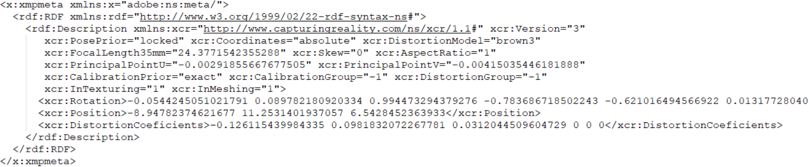

ImageNode
The ImageNode class in Geomapi represents the data and metadata of image data. The data itself and methods build upon Open3D and OpenCV concepts while the metadata builds upon the RDFlib framework:
https://docs.opencv.org/4.x/d3/df2/tutorial_py_basic_ops.html
https://rdflib.readthedocs.io/
The code below shows how to create a ImageNode from various inputs.
First the geomapi and external packages are imported
#IMPORT PACKAGES
from rdflib import Graph
import os
import numpy as np
#IMPORT MODULES
from context import geomapi #context import for documentation only
from geomapi.nodes import ImageNode
Jupyter environment detected. Enabling Open3D WebVisualizer.
[Open3D INFO] WebRTC GUI backend enabled.
[Open3D INFO] WebRTCWindowSystem: HTTP handshake server disabled.
ImageNode Creation
A ImageNode is constructed using the same parameters as the base Node. Please refer to Node Tutorial For more info about Node Creation
ImageNode( subject = None, # (URIRef, optional) : A subject to use as identifier for the Node.
graph = None, # (Graph, optional) : An RDF Graph to parse.
graphPath = None, # (Path, optional) : The path of an RDF Graph to parse.
name = None, # (str, optional) : A name of the Node.
path = None, # (Path, optional) : A filepath to a resource.
timestamp = None, # (str, optional) : Timestamp for the node.
resource = None, # (optional) : Resource associated with the node.
cartesianTransform = None, # (np.ndarray, optional) : The (4x4) transformation matrix.
orientedBoundingBox = None, # (o3d.geometry.OrientedBoundingBox, optional) : The oriented bounding box of the node.
convexHull = None, # (o3d.geometry.TriangleImage, optional) : The convex hull of the node.
loadResource = False, # Load the resource at initialization?
imageWidth = None, # (int, optional) : width of the image in pixels (u). Defaults to 640p
imageHeight = None, # (int, optional) : height of the image in pixels (v). Defaults to 480p
intrinsicMatrix = None, # (np.array, optional) : intrinsic camera matrix (3x3) k=[[fx 0 cx] [0 fy cy][0 0 1]]
focalLength35mm = None, # (float, optional) : focal length with a standardised Field-of-View in pixels. Defaults to circa 2600pix for a 25.4mm lens
keypoints = None, # (np.array, optional) : a set of image keypoints, generated through sift or orb.
descriptors = None # (np.array, optional) : a set of image descriptors, generated through sift or orb.
)
Ontology link
The ImageNode has 9 new standard properties that are serialized to the graph:
python name |
predicate |
|---|---|
|
|
|
|
|
|
|
|
|
|
|
|
|
|
|
|
|
|
Creation from Structure-from-Motion pipelines
As GEOMAPI is a geomatics API, the cartesianTransform of nodes is crucial to many of its functionality. For images, this is generally derived from Structure-from-Motion (SfM) pipelines. These pipelines allign the images in a common coordinate system of which the geospatial components are stored in software specific formats.
GEOMAPI currently supports two formats. Agisoft Metashape and Capturing Reality.
Capturing Reality
To import the pose of an image from the Capturing Reality pipeline, one should export the coordinate information of the image to an XMP file. These files are xml formatted and stored per image which yields cartesianTransform and some internal camera parameters such as the focalLength35mm, which is needed for digital renders.

node=ImageNode(path = r"../../..\tests\testfiles\img\IMG_8834.jpg", xmpPath=r"../../..\tests\testfiles\img\IMG_8834.xmp", depth=0.1, loadResource=True,focalLength35mm = 50)
print(node.cartesianTransform)
print(node.depth)
creating camera frustrum
0.1
[[ 4.12555151e-01 4.12058430e-02 -9.10000179e-01 6.68850552e+01]
[ 9.10841440e-01 -4.52553581e-03 4.12731621e-01 4.52551195e+01]
[ 1.28887160e-02 -9.99140430e-01 -3.93990225e-02 5.45377093e+00]
[ 0.00000000e+00 0.00000000e+00 0.00000000e+00 1.00000000e+00]]
0.1
Agisoft Metashape
Alternatively, Metashape exports its camera poses and properties in a common XML file . Therefore, the xml file is used to create a list of Imagenodes using the geomapi.tools.xml_to_image_nodes
import geomapi.tools as tl
nodes = tl.xml_to_image_nodes(path=r"../../..\tests\testfiles\img\railway.xml")
print(len(nodes), "nodes parsed")
print("focallength35mm: \n",nodes[0].focalLength35mm)
print("intrinsic matrix \n", nodes[0].intrinsicMatrix)
191 nodes parsed
focallength35mm:
101.37203855665474
intrinsic matrix
[[2.19630446e+04 0.00000000e+00 5.82462523e+03]
[0.00000000e+00 2.19630446e+04 4.31969922e+03]
[0.00000000e+00 0.00000000e+00 1.00000000e+00]]
ImageNode Resource
When creating a ImageNode with a resource, it can be done either directly with an np.ndarray, PIL.Image.Image or o3d.geometry.Image, or with the path to an image file.
A resource can be a big piece of data, this is why it is not always wanted to load the whole resource at initialization. This is why the loadResource parameter is default to False
Loading The Resource
node = ImageNode(path=r"../../..\tests\testfiles\img\IMG_8834.JPG", loadResource=False)
print("resource before loading:",node.resource)
node.load_resource() # Use specialized node fo each type of resource.
print("resource after loading:",node.resource)
Resource not loaded, but path is defined, call `load_resource()` to access it.
resource before loading: None
resource after loading: [[[ 58 63 40]
[ 54 59 36]
[ 51 52 34]
...
[102 144 186]
[102 144 186]
[102 144 186]]
[[ 58 63 40]
[ 55 60 37]
[ 51 52 34]
...
[102 144 186]
[102 144 186]
[102 144 186]]
[[ 59 64 41]
[ 56 61 38]
[ 52 53 35]
...
[102 144 186]
[102 144 186]
[102 144 186]]
...
[[160 159 138]
[158 160 138]
[158 160 138]
...
[185 177 158]
[183 175 156]
[181 173 154]]
[[158 160 139]
[158 160 139]
[158 160 139]
...
[188 179 162]
[186 177 160]
[185 176 159]]
[[159 161 140]
[159 161 140]
[158 161 140]
...
[190 181 164]
[189 180 163]
[188 179 162]]]
Saving The Resource
A Image resource can be saved to disk using the save_resource() function.
Currently supports: .ply, .obj
node = ImageNode(path=r"../../..\tests\testfiles\img\IMG_8834.JPG", loadResource=True)
node.save_resource(directory=r"../../../tests/testfiles/resources", extension=".jpg") # Save the resource to the resourcePath
True
ImageNode Transformation
Since every nod has a cartesian transform, it can be transformed using the node.transform() function.
The transformation also updates the convexHull and orientedBoundingBox.
node = ImageNode()
print(node.cartesianTransform)
transformation = np.array([[0,0,1,0],[0,1,0,0],[1,0,0,0],[0,0,0,1]])
node.transform(transformation=transformation)
print("applying transformation: (-1)")
print(node.cartesianTransform,"\n")
node = ImageNode()
rotation = np.array([90,0,0]) #eulers in degrees
node.transform(rotation=rotation)
print("applying rotation: (90,0,0)")
print(node.cartesianTransform,"\n")
node = ImageNode()
translation = np.array([1,2,3])
node.transform(translation=translation)
print("applying translation: (1,2,3)")
print(node.cartesianTransform)
[[1. 0. 0. 0.]
[0. 1. 0. 0.]
[0. 0. 1. 0.]
[0. 0. 0. 1.]]
applying transformation: (-1)
[[0. 0. 1. 0.]
[0. 1. 0. 0.]
[1. 0. 0. 0.]
[0. 0. 0. 1.]]
applying rotation: (90,0,0)
[[ 1.000000e+00 0.000000e+00 0.000000e+00 0.000000e+00]
[ 0.000000e+00 6.123234e-17 -1.000000e+00 0.000000e+00]
[ 0.000000e+00 1.000000e+00 6.123234e-17 0.000000e+00]
[ 0.000000e+00 0.000000e+00 0.000000e+00 1.000000e+00]]
applying translation: (1,2,3)
[[1. 0. 0. 1.]
[0. 1. 0. 2.]
[0. 0. 1. 3.]
[0. 0. 0. 1.]]
World to Pixel and Pixel to World
You can use the functions geomapi.nodes.imagenode.ImageNode.world_to_pixel_coordinates and geomapi.nodes.imagenode.ImageNode.pixel_to_world_coordinates to convert between the coordinate systems.
imageNode = ImageNode(graphPath=r"../../../tests\testfiles\graphs\img_graph.ttl", subject = "images#IMG_8834", loadResource=True)
# World to image
wp = np.array([-200,-10,-50])
uv, depths = imageNode.world_to_pixel_coordinates(wp)
print(uv, depths)
# Image to world
wp_back = imageNode.pixel_to_world_coordinates(uv, depths)
print(wp_back)
[[ 50.65828383 2636.14019386]] [278.12925345]
[[-200. -10. -50.]]
ImageNode Visualisation
When a ImageNode has a resource, the show() function displays the Image using matplotlib.
Use the convertColorspace parameter to switch the Blue and Red channels of the image
node = ImageNode(path=r"../../..\tests\testfiles\img\IMG_8834.JPG", loadResource=True, focalLength35mm=50)
node.show(convertColorspace=False)
creating camera frustrum
1
ImageNodes can also be shown as 3D camera frustums
node.show(show3d=True)
Feature Detection
from matplotlib import pyplot as plt
node = ImageNode(path=r"../../..\tests\testfiles\img\IMG_8834.JPG", loadResource=True)
imageNode.get_image_features()
image = imageNode.draw_keypoints_on_image()
plt.imshow(image)
<matplotlib.image.AxesImage at 0x2336c37a9d0>
Further reading
Please refer to the full API documentation of the ImageNode class for more details about the functionality